Changes in PRIMAP-hist v2.5.1_final compared to v2.5_final for Andorra
2024-02-29
Johannes Gütschow
Change analysis for Andorra for PRIMAP-hist v2.5.1_final compared to v2.5_final
Overview over emissions by sector and gas
The following figures show the aggregate national total emissions excluding LULUCF AR6GWP100 for the country reported priority scenario. The dotted linesshow the v2.5_final data.
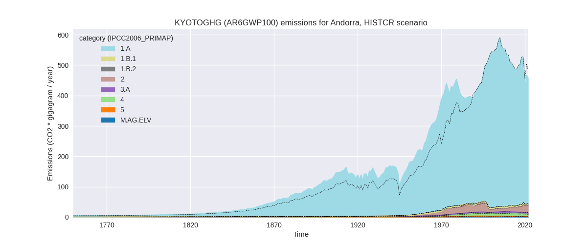
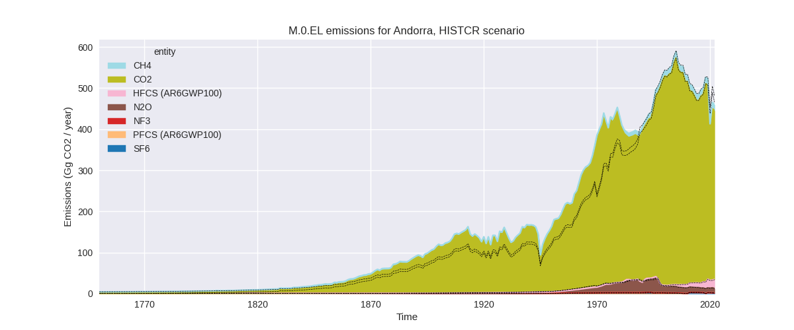
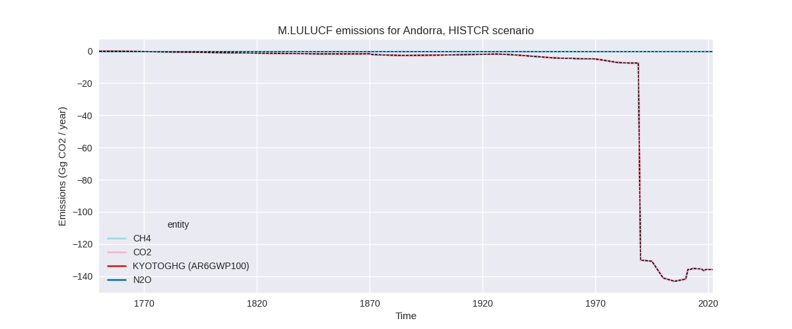
The following figures show the aggregate national total emissions excluding LULUCF AR6GWP100 for the third party priority scenario. The dotted linesshow the v2.5_final data.
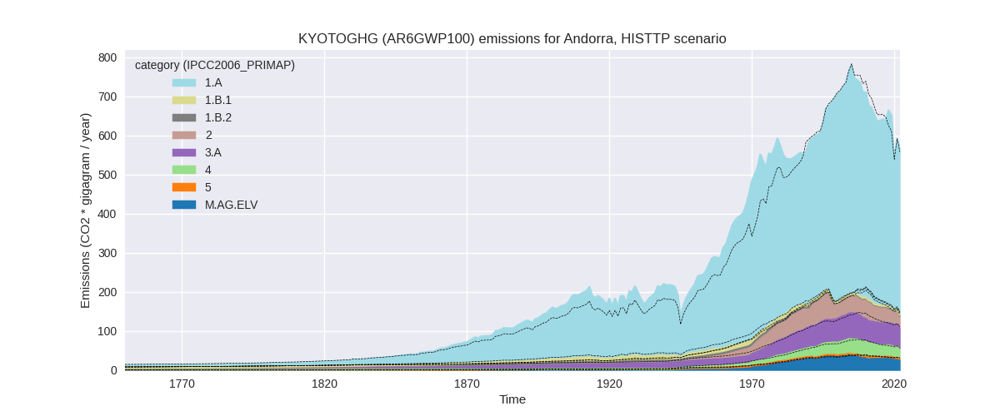
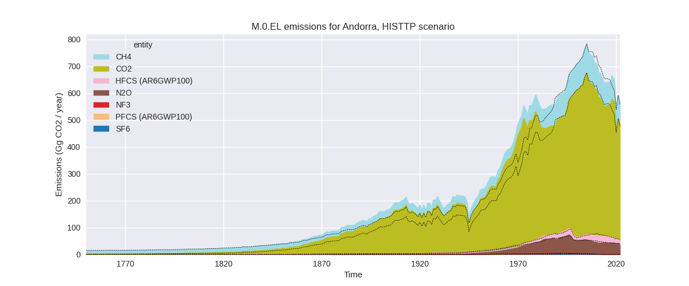
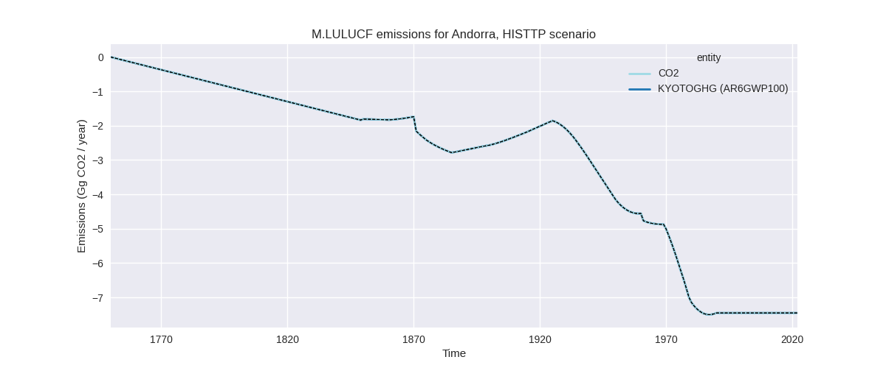
Overview over changes
In the country reported priority scenario we have the following changes for aggregate Kyoto GHG and national total emissions excluding LULUCF (M.0.EL):
- Emissions in 2022 have changed by -4.6%% (-21.96 Gg CO2 / year)
- Emissions in 1990-2022 have changed by -1.1%% (-5.38 Gg CO2 / year)
In the third party priority scenario we have the following changes for aggregate Kyoto GHG and national total emissions excluding LULUCF (M.0.EL):
- Emissions in 2022 have changed by 1.9%% (10.49 Gg CO2 / year)
- Emissions in 1990-2022 have changed by -1.0%% (-6.43 Gg CO2 / year)
Most important changes per scenario and time frame
In the country reported priority scenario the following sector-gas combinations have the highest absolute impact on national total KyotoGHG (AR6GWP100) emissions in 2022 (top 5):
- 1: 1.A, CO2 with -21.20 Gg CO2 / year (-4.9%)
- 2: 1.B.2, CH4 with -1.62 Gg CO2 / year (-34.8%)
- 3: 1.A, N2O with 0.47 Gg CO2 / year (9.0%)
- 4: 3.A, CH4 with -0.33 Gg CO2 / year (-6.4%)
- 5: 2, N2O with 0.27 Gg CO2 / year (13.2%)
In the country reported priority scenario the following sector-gas combinations have the highest absolute impact on national total KyotoGHG (AR6GWP100) emissions in 1990-2022 (top 5):
- 1: 1.A, CO2 with -3.06 Gg CO2 / year (-0.7%)
- 2: 1.B.2, CH4 with -2.60 Gg CO2 / year (-46.5%)
- 3: 2, N2O with 0.23 Gg CO2 / year (2.8%)
- 4: 1.A, N2O with 0.05 Gg CO2 / year (0.9%)
- 5: M.AG.ELV, N2O with -0.01 Gg CO2 / year (-1.1%)
In the third party priority scenario the following sector-gas combinations have the highest absolute impact on national total KyotoGHG (AR6GWP100) emissions in 2022 (top 5):
- 1: 1.A, CO2 with 17.90 Gg CO2 / year (4.5%)
- 2: M.AG.ELV, N2O with -3.76 Gg CO2 / year (-12.9%)
- 3: 2, CO2 with -3.14 Gg CO2 / year (-21.8%)
- 4: 1.B.2, CH4 with -1.62 Gg CO2 / year (-34.8%)
- 5: 4, CH4 with 1.36 Gg CO2 / year (6.6%)
In the third party priority scenario the following sector-gas combinations have the highest absolute impact on national total KyotoGHG (AR6GWP100) emissions in 1990-2022 (top 5):
- 1: 2, CO2 with -5.24 Gg CO2 / year (-26.1%)
- 2: 1.A, CO2 with 3.38 Gg CO2 / year (0.7%)
- 3: 1.B.2, CH4 with -2.60 Gg CO2 / year (-46.5%)
- 4: M.AG.ELV, CO2 with 1.92 Gg CO2 / year (118.2%)
- 5: 3.A, CH4 with -1.85 Gg CO2 / year (-3.2%)
Notes on data changes
Here we list notes explaining important emissions changes for the country. ’' means that the following text only applies to the TP time series, while means that it only applies to the CR scenario. Otherwise the note applies to both scenarios.
- 1.A, CO2: CDIAC only covers years after 1990 for Andorra. For 1970-1990 EDGAR data was used. Now we use regional growth rates from CEDS for pre-1990 emissions. This leads to higher pre-1990 emissions in PRIMAP-hist. New CDIAC data have also changed emissions for the last years.
- 2.D, CO2: Emissions in 2.D (non-energy products from fuels and solvent use) are much lower in EDGAR 8.0 than in EDGAR 7.0 and thus emissions in PRIMAP-hist v2.5.1 are lower than in v2.5.
- M.AG.ELV, N2O: Andorra is not included in the FAO dataset thus we use EDGAR data. EDGAR 8.0 data are lower than EDGAR 7.0 starting in 2007.
- 1.B.2, CH4: EDGAR 8.0 data are much lower than EDGAR 7.0 for all years.
Changes by sector and gas
For each scenario and time frame the changes are displayed for all individual sectors and all individual gases. In the sector plot we use aggregate Kyoto GHGs in AR6GWP100. In the gas plot we usenational total emissions without LULUCF. ## country reported scenario
2022

1990-2022
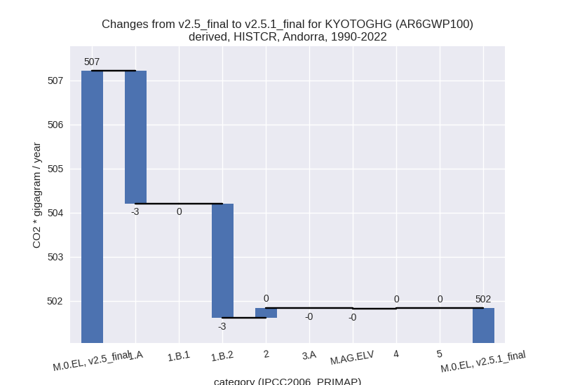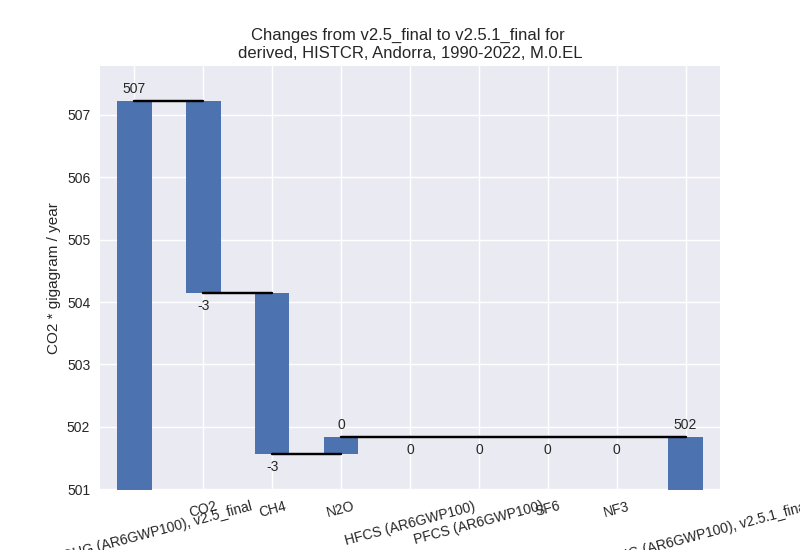
third party scenario
2022
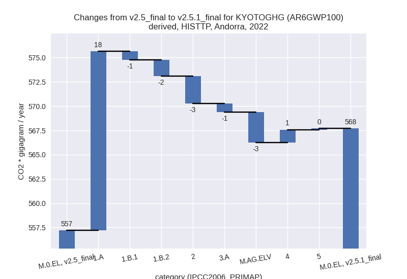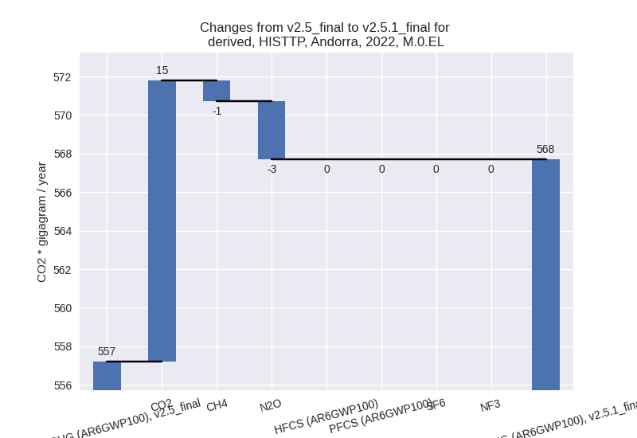
1990-2022
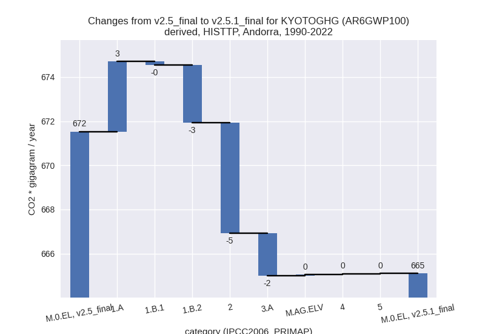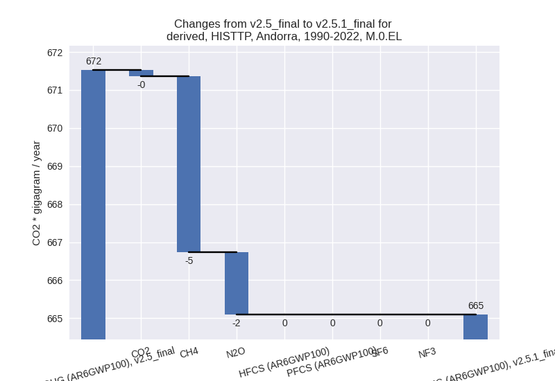
Detailed changes for the scenarios:
country reported scenario (HISTCR):
Most important changes per time frame
For 2022 the following sector-gas combinations have the highest absolute impact on national total KyotoGHG (AR6GWP100) emissions in 2022 (top 5):
- 1: 1.A, CO2 with -21.20 Gg CO2 / year (-4.9%)
- 2: 1.B.2, CH4 with -1.62 Gg CO2 / year (-34.8%)
- 3: 1.A, N2O with 0.47 Gg CO2 / year (9.0%)
- 4: 3.A, CH4 with -0.33 Gg CO2 / year (-6.4%)
- 5: 2, N2O with 0.27 Gg CO2 / year (13.2%)
For 1990-2022 the following sector-gas combinations have the highest absolute impact on national total KyotoGHG (AR6GWP100) emissions in 1990-2022 (top 5):
- 1: 1.A, CO2 with -3.06 Gg CO2 / year (-0.7%)
- 2: 1.B.2, CH4 with -2.60 Gg CO2 / year (-46.5%)
- 3: 2, N2O with 0.23 Gg CO2 / year (2.8%)
- 4: 1.A, N2O with 0.05 Gg CO2 / year (0.9%)
- 5: M.AG.ELV, N2O with -0.01 Gg CO2 / year (-1.1%)
Changes in the main sectors for aggregate KyotoGHG (AR6GWP100) are
- 1: Total sectoral emissions in 2022 are 418.59 Gg
CO2 / year which is 91.2% of M.0.EL emissions. 2022 Emissions have
changed by -5.0% (-22.24 Gg CO2 /
year). 1990-2022 Emissions have changed by -1.2% (-5.61 Gg CO2 / year). For 2022 the
changes per gas
are:
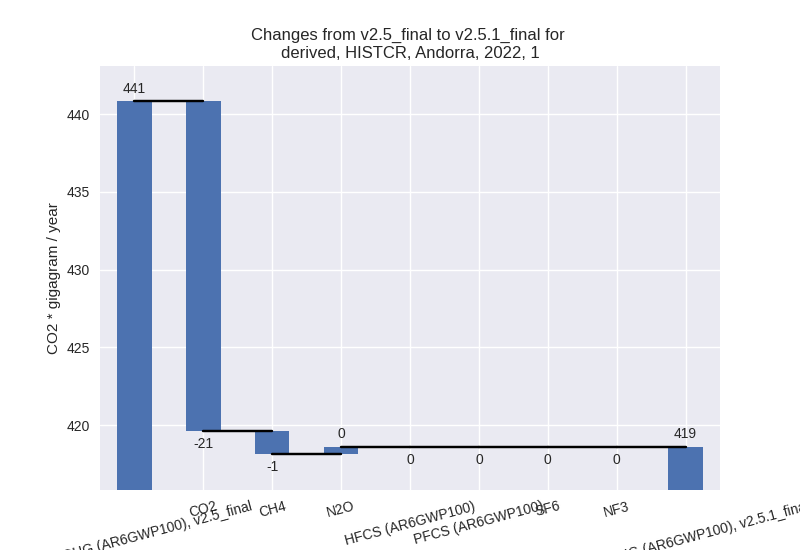
The changes come from the following subsectors:- 1.A: Total sectoral emissions in 2022 are 415.50 Gg
CO2 / year which is 99.3% of category 1 emissions. 2022 Emissions have
changed by -4.7% (-20.59 Gg CO2 /
year). 1990-2022 Emissions have changed by -0.6% (-3.01 Gg CO2 / year). For 2022 the
changes per gas
are:
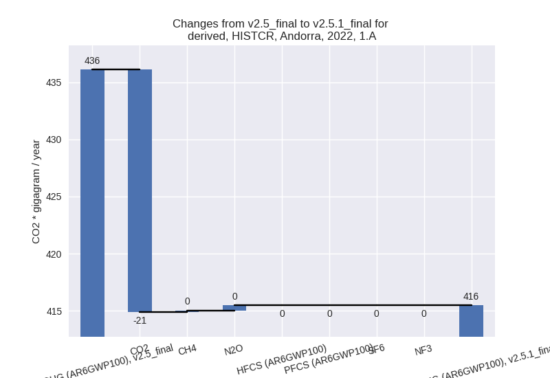
There is no subsector information available in PRIMAP-hist. - 1.B.2: Total sectoral emissions in 2022 are 3.09 Gg
CO2 / year which is 0.7% of category 1 emissions. 2022 Emissions have
changed by -34.8% (-1.65 Gg CO2 /
year). 1990-2022 Emissions have changed by -45.6% (-2.60 Gg CO2 / year). For 2022 the
changes per gas
are:
For 1990-2022 the changes per gas are:
There is no subsector information available in PRIMAP-hist.
- 1.A: Total sectoral emissions in 2022 are 415.50 Gg
CO2 / year which is 99.3% of category 1 emissions. 2022 Emissions have
changed by -4.7% (-20.59 Gg CO2 /
year). 1990-2022 Emissions have changed by -0.6% (-3.01 Gg CO2 / year). For 2022 the
changes per gas
are:
- 2: Total sectoral emissions in 2022 are 26.07 Gg CO2 / year which is 5.7% of M.0.EL emissions. 2022 Emissions have changed by 1.1% (0.29 Gg CO2 / year). 1990-2022 Emissions have changed by 1.3% (0.23 Gg CO2 / year).
- M.AG: Total sectoral emissions in 2022 are 6.23 Gg
CO2 / year which is 1.4% of M.0.EL emissions. 2022 Emissions have
changed by -8.6% (-0.58 Gg CO2 /
year). 1990-2022 Emissions have changed by -0.4% (-0.02 Gg CO2 / year). For 2022 the
changes per gas
are:

The changes come from the following subsectors:- 3.A: Total sectoral emissions in 2022 are 5.27 Gg
CO2 / year which is 84.6% of category M.AG emissions. 2022 Emissions
have changed by -6.6% (-0.37 Gg CO2
/ year). 1990-2022 Emissions have changed by -0.2% (-0.01 Gg CO2 / year). For 2022 the
changes per gas
are:
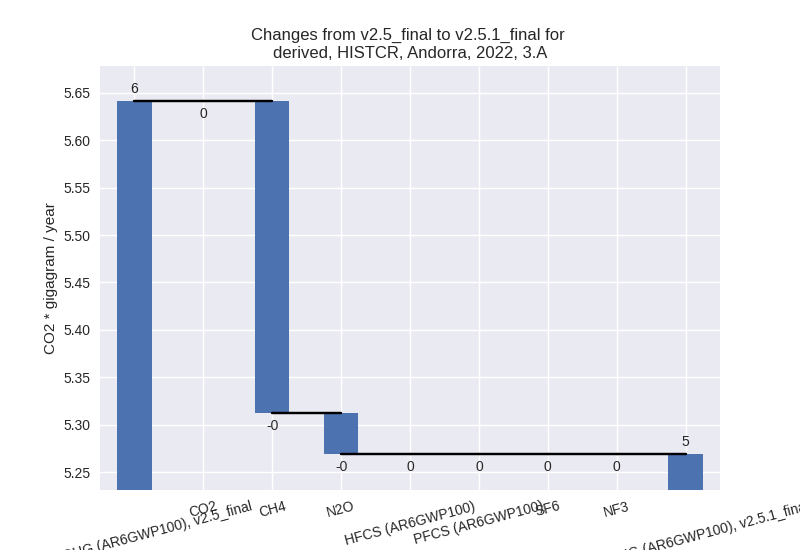
There is no subsector information available in PRIMAP-hist. - M.AG.ELV: Total sectoral emissions in 2022 are 0.96
Gg CO2 / year which is 15.4% of category M.AG emissions. 2022 Emissions
have changed by -18.0% (-0.21 Gg CO2
/ year). 1990-2022 Emissions have changed by -1.1% (-0.01 Gg CO2 / year). For 2022 the
changes per gas
are:
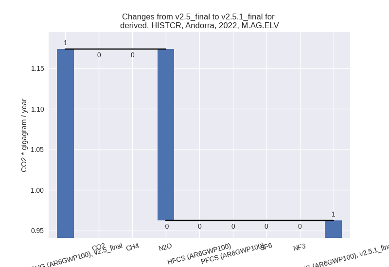
There is no subsector information available in PRIMAP-hist.
- 3.A: Total sectoral emissions in 2022 are 5.27 Gg
CO2 / year which is 84.6% of category M.AG emissions. 2022 Emissions
have changed by -6.6% (-0.37 Gg CO2
/ year). 1990-2022 Emissions have changed by -0.2% (-0.01 Gg CO2 / year). For 2022 the
changes per gas
are:
- 4: Total sectoral emissions in 2022 are 7.42 Gg CO2
/ year which is 1.6% of M.0.EL emissions. 2022 Emissions have changed by
6.4% (0.45 Gg CO2 / year). 1990-2022
Emissions have changed by 0.2% (0.01
Gg CO2 / year). For 2022 the changes per gas
are:
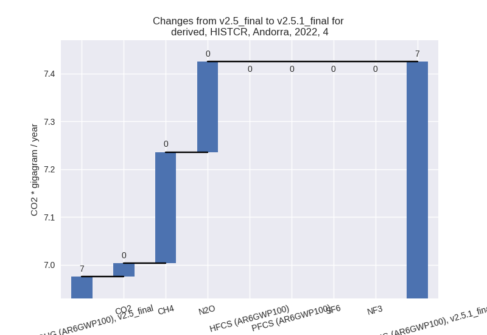 - 5: Total sectoral emissions in 2022 are 0.87 Gg CO2
/ year which is 0.2% of M.0.EL emissions. 2022 Emissions have changed by
17.4% (0.13 Gg CO2 / year).
1990-2022 Emissions have changed by 0.2% (0.00 Gg CO2 / year). For 2022 the
changes per gas
are:
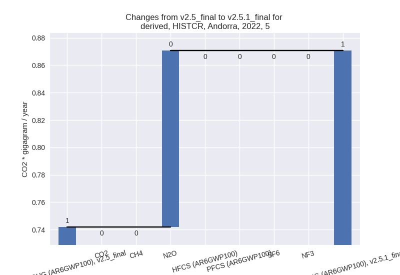
third party scenario (HISTTP):
Most important changes per time frame
For 2022 the following sector-gas combinations have the highest absolute impact on national total KyotoGHG (AR6GWP100) emissions in 2022 (top 5):
- 1: 1.A, CO2 with 17.90 Gg CO2 / year (4.5%)
- 2: M.AG.ELV, N2O with -3.76 Gg CO2 / year (-12.9%)
- 3: 2, CO2 with -3.14 Gg CO2 / year (-21.8%)
- 4: 1.B.2, CH4 with -1.62 Gg CO2 / year (-34.8%)
- 5: 4, CH4 with 1.36 Gg CO2 / year (6.6%)
For 1990-2022 the following sector-gas combinations have the highest absolute impact on national total KyotoGHG (AR6GWP100) emissions in 1990-2022 (top 5):
- 1: 2, CO2 with -5.24 Gg CO2 / year (-26.1%)
- 2: 1.A, CO2 with 3.38 Gg CO2 / year (0.7%)
- 3: 1.B.2, CH4 with -2.60 Gg CO2 / year (-46.5%)
- 4: M.AG.ELV, CO2 with 1.92 Gg CO2 / year (118.2%)
- 5: 3.A, CH4 with -1.85 Gg CO2 / year (-3.2%)
Changes in the main sectors for aggregate KyotoGHG (AR6GWP100) are
- 1: Total sectoral emissions in 2022 are 430.42 Gg
CO2 / year which is 75.8% of M.0.EL emissions. 2022 Emissions have
changed by 3.8% (15.89 Gg CO2 /
year). 1990-2022 Emissions have changed by 0.1% (0.42 Gg CO2 / year). For 2022 the
changes per gas
are:
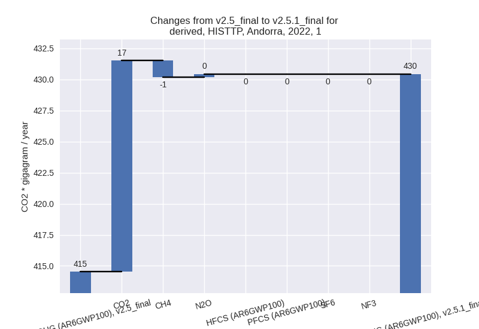
The changes come from the following subsectors:- 1.A: Total sectoral emissions in 2022 are 425.69 Gg
CO2 / year which is 98.9% of category 1 emissions. 2022 Emissions have
changed by 4.5% (18.44 Gg CO2 /
year). 1990-2022 Emissions have changed by 0.7% (3.18 Gg CO2 / year). For 2022 the
changes per gas
are:
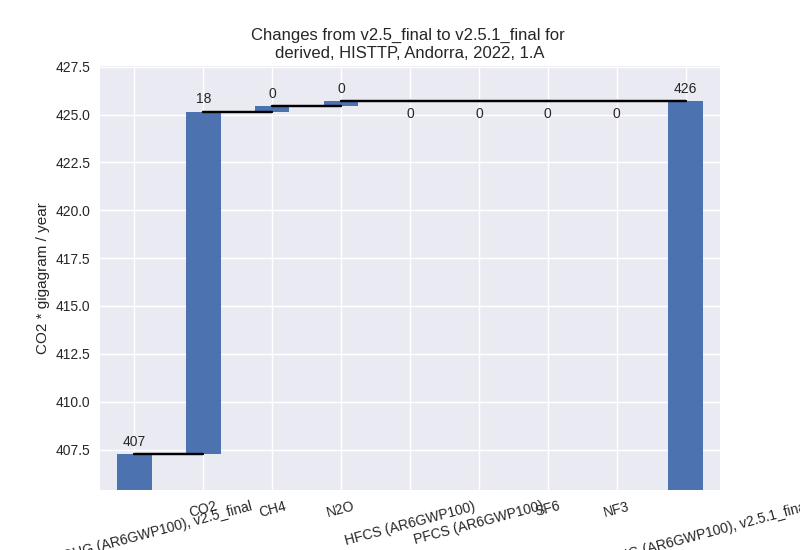
There is no subsector information available in PRIMAP-hist. - 1.B.1: Total sectoral emissions in 2022 are 1.64 Gg
CO2 / year which is 0.4% of category 1 emissions. 2022 Emissions have
changed by -35.3% (-0.90 Gg CO2 /
year). 1990-2022 Emissions have changed by -5.5% (-0.17 Gg CO2 / year). For 2022 the
changes per gas
are:
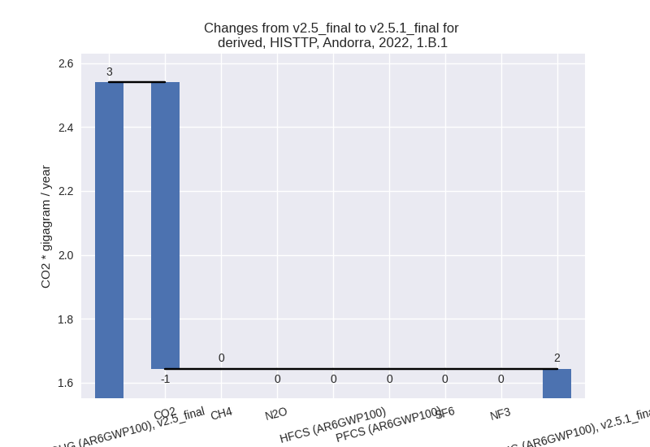
For 1990-2022 the changes per gas are:
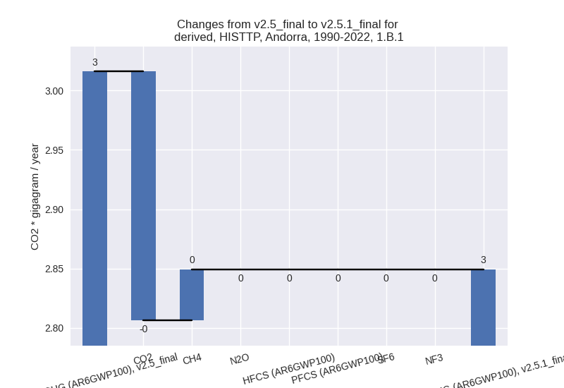
There is no subsector information available in PRIMAP-hist. - 1.B.2: Total sectoral emissions in 2022 are 3.09 Gg
CO2 / year which is 0.7% of category 1 emissions. 2022 Emissions have
changed by -34.8% (-1.65 Gg CO2 /
year). 1990-2022 Emissions have changed by -45.6% (-2.60 Gg CO2 / year). For 2022 the
changes per gas
are:
For 1990-2022 the changes per gas are:
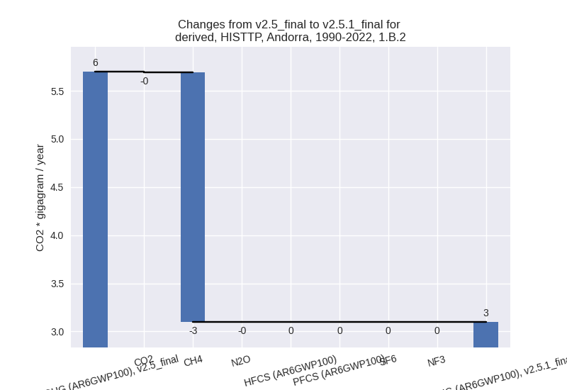
There is no subsector information available in PRIMAP-hist.
- 1.A: Total sectoral emissions in 2022 are 425.69 Gg
CO2 / year which is 98.9% of category 1 emissions. 2022 Emissions have
changed by 4.5% (18.44 Gg CO2 /
year). 1990-2022 Emissions have changed by 0.7% (3.18 Gg CO2 / year). For 2022 the
changes per gas
are:
- 2: Total sectoral emissions in 2022 are 29.04 Gg
CO2 / year which is 5.1% of M.0.EL emissions. 2022 Emissions have
changed by -8.8% (-2.82 Gg CO2 /
year). 1990-2022 Emissions have changed by -9.9% (-5.02 Gg CO2 / year). For 2022 the
changes per gas
are:

For 1990-2022 the changes per gas are:
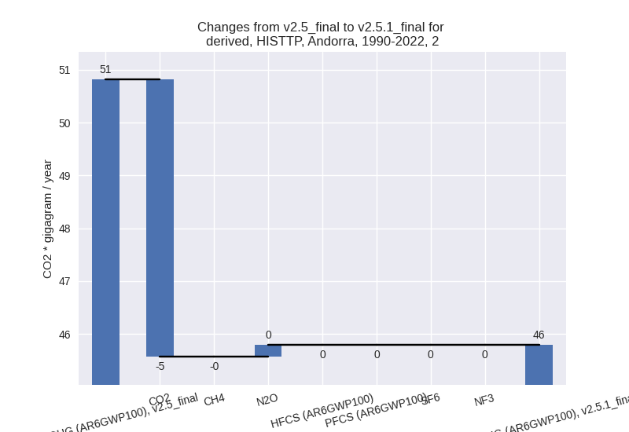 - M.AG: Total sectoral emissions in 2022 are 81.09 Gg
CO2 / year which is 14.3% of M.0.EL emissions. 2022 Emissions have
changed by -4.7% (-4.01 Gg CO2 /
year). 1990-2022 Emissions have changed by -2.0% (-1.87 Gg CO2 / year). For 2022 the
changes per gas
are:
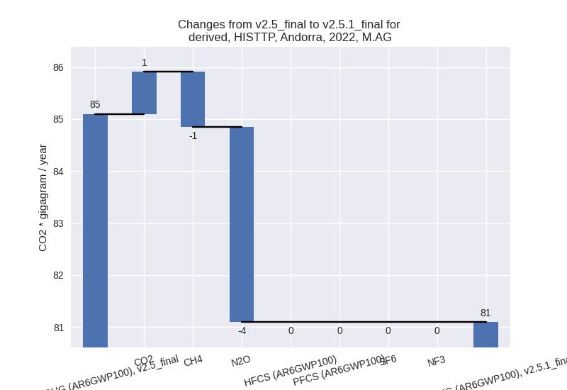
The changes come from the following subsectors:- 3.A: Total sectoral emissions in 2022 are 53.16 Gg
CO2 / year which is 65.5% of category M.AG emissions. 2022 Emissions
have changed by -1.7% (-0.91 Gg CO2
/ year). 1990-2022 Emissions have changed by -3.2% (-1.93 Gg CO2 / year). For 1990-2022
the changes per gas
are:
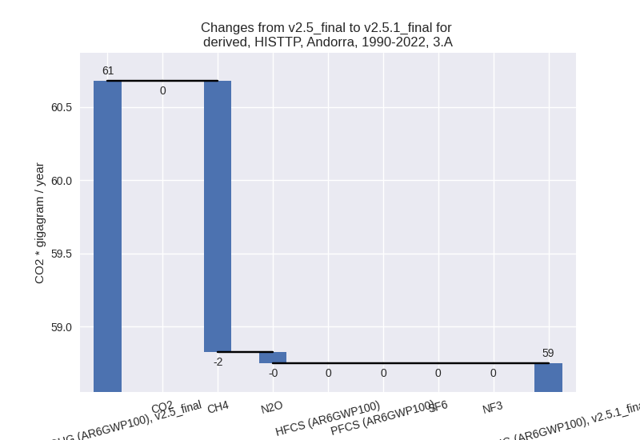
There is no subsector information available in PRIMAP-hist. - M.AG.ELV: Total sectoral emissions in 2022 are
27.94 Gg CO2 / year which is 34.5% of category M.AG emissions. 2022
Emissions have changed by -10.0%
(-3.09 Gg CO2 / year). 1990-2022 Emissions have changed by 0.2% (0.06 Gg CO2 / year). For 2022 the
changes per gas
are:
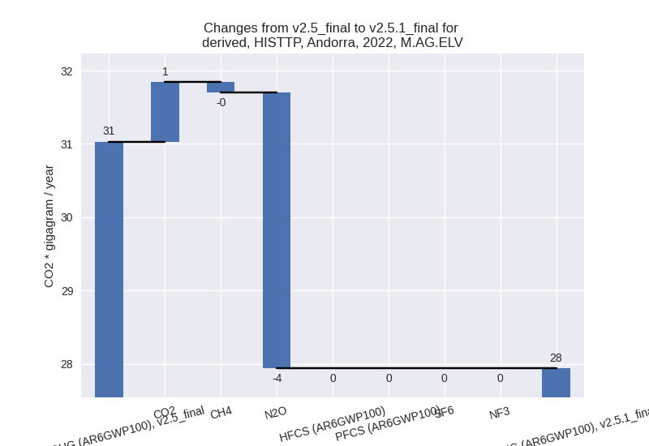
There is no subsector information available in PRIMAP-hist.
- 3.A: Total sectoral emissions in 2022 are 53.16 Gg
CO2 / year which is 65.5% of category M.AG emissions. 2022 Emissions
have changed by -1.7% (-0.91 Gg CO2
/ year). 1990-2022 Emissions have changed by -3.2% (-1.93 Gg CO2 / year). For 1990-2022
the changes per gas
are:
- 4: Total sectoral emissions in 2022 are 26.26 Gg
CO2 / year which is 4.6% of M.0.EL emissions. 2022 Emissions have
changed by 5.2% (1.29 Gg CO2 /
year). 1990-2022 Emissions have changed by 0.1% (0.04 Gg CO2 / year). For 2022 the
changes per gas
are:
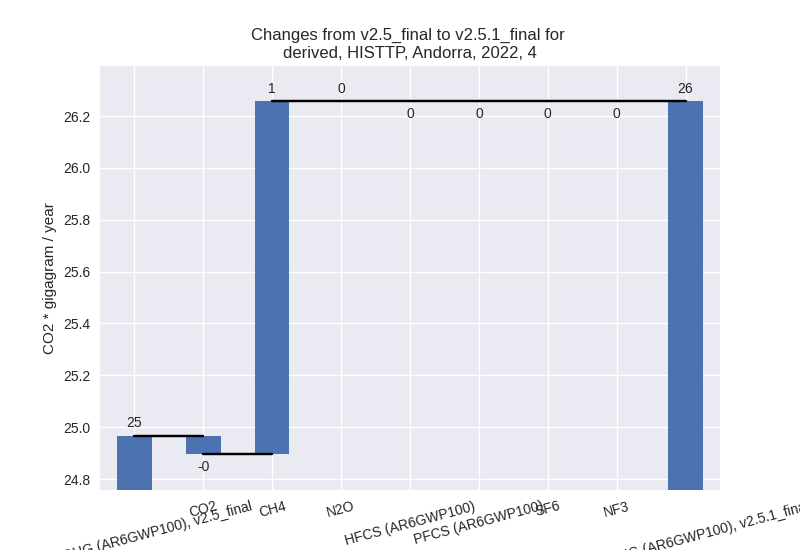 - 5: Total sectoral emissions in 2022 are 0.87 Gg CO2
/ year which is 0.2% of M.0.EL emissions. 2022 Emissions have changed by
17.4% (0.13 Gg CO2 / year).
1990-2022 Emissions have changed by 0.2% (0.00 Gg CO2 / year). For 2022 the
changes per gas
are: